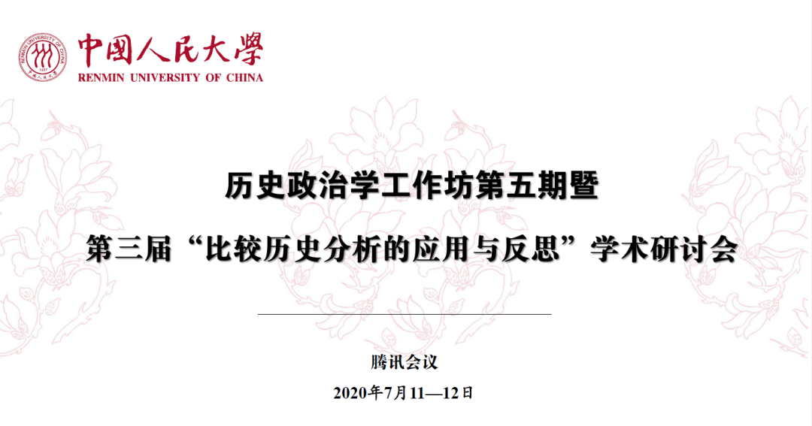

收录于合集
2020年7月11日—12日，中国人民大学历史政治学研究中心成功举办历史政治学工作坊第五期暨第三届“比较历史分析的应用与反思”线上学术研讨会，与会专家学者就重塑社会科学的历史想象力进行了深入探讨。本期推出会议主旨演讲和主题论坛环节的纪要，以飨读者。

主旨演讲环节由中国人民大学国际关系学院讲师、历史政治学研究中心秘书长黄晨博士主持。会议首先播放了美国西北大学社会学系与政治学系双聘教授詹姆斯·马洪尼（James Mahoney）的视频致辞。马洪尼教授首先感谢组委会的邀请并向本次会议表达了良好祝愿，之后，他针对比较历史分析谈了三点看法，他指出：首先，比较历史分析关注宏观进程与重大议题，本次研讨会的论文体现了这一点；其次，比较历史分析既关注解释与因果分析，又关注解析与历史叙述，在理解特定结果何以发生时，比较历史的研究者们往往诉诸社会结果与宏观进程；再者，比较历史分析在“比较”与“历史”两个维度上展现出了特定的研究路径，它强调对时间性和历史序列的关注，研究者需要以特定方式展现“时间很重要”（time matters）这一核心命题。从研究方法上看，比较历史分析要求研究者从事系统性的案例比较，关注情境的重要性。
中国人民大学国际关系学院院长杨光斌教授的发言主题是《中国政治学的百年“学习”与反思》。杨光斌教授首先回顾了中国的政治学的历时百年的“取经”历程，学习对象从民国时期的欧洲旧制度主义政治学，到建国后前30年的苏联阶级分析政治学，再到改革开放后30年的美国个体主义政治学。杨老师表示，这一学习历程未必能够很好地解释和回答现实问题，以及为中国政治学未来的发展指明方向。这是因为，无论是欧洲、苏联还是美国的政治学都是基于进化论取向的政体论视角，这都难以解释国家转型的经验。因此，政治学研究范式需要从制度分析转向治理研究。比较政治制度注重演绎法与先验主义的意识形态，而比较国家治理注重归纳法与经验主义的科学实证。治理研究比制度分析更加困难，历史政治学为治理研究提供了一条可行路径。历史政治学具有两大功能，其一是在知识论上回答政治理论的知识来源问题，避免历史研究的碎片化；其二是求善治，即研究如何提供治国理政的方案或者理解善治的方法。中国人民大学提出的历史政治学已经在中国政治学界引起广泛关注，同时积累了一些具有代表性的研究发现。展望未来，历史政治学有望成为中国政治学发展的新方向，并为重建政治学原理体系提供原创性知识成果。
美国哈佛大学政府系王裕华副教授的发言主题是《中国国家的兴衰：公元618—1911》。王裕华教授首先回顾了既有研究对于国家组织形式和功能的理解，他指出这些研究经验大多源自欧洲国家线性的历史建构过程，这要求我们需要摆脱欧洲模式产生的理论，超越简单检验、验证欧洲经验的研究，其中立足中国经验、归纳出新的国家建构和发展的理论是一条可行路径。王老师选择的因变量是国家发展，其中包含两个维度：国家能力，即国家动员社会的能力；国家形式，即统治者和统治精英的关系（平等或支配）和国家与社会的关系（国家主导还是国家与社会共治）。自变量是精英的社会面貌。中央精英与地方社会团体的关系存在三种理想类型，并会对国家发展产生不同偏好：当中央精英之间以及中央精英和各地的社会团体之间存在联系时，精英们都希望建立强大的国家以提供对社会团体的保护，统治者很难支配统治精英，此时精英之间的关系体现为星状图；当中央精英之间没有联系但其分别与地方社会团体存在联系时，精英并不乐于建立强大国家而只是希望国家保持最低限度职能，统治者能够建立个人集权，此时精英间之间的关系体现为领结图；当中央精英和地方社会组织之间没有联系但邻近的地方社会组织之间存在联系时，精英没有动机加强国家权力，统治者能够实现较强的集权，此时精英之间的关系体现为环状图。外部刺激尤其是气候和战争因素导致了上述精英形态的变化（相关阅读：王裕华 | 中国国家的兴衰探源）。
云南大学民族政治研究院郭台辉教授首先介绍了他在书稿《历史社会学的力量》中关于历史社会学四项基本内容的写作，其一是历史社会学的兴起问题，其中20世纪30年代是其前学科时代和学科化时代的转折点；其二是历史社会学的性质问题，历史社会学并不是一个学术流派和独特方法，而是给社会科学各学科领域的既定主题增加历史面向：提倡历史意识，追踪历史轨迹，提供历史材料，成为沟通历史学和社会科学的桥梁和反现行学科分类体系的学术运动和学术潮流；其三是历史社会学的构成问题，这场学术运动持续时间长，涉及的学者、知识庞杂，研究力量、领域分散，研究策略高度分化，产生了自我消解的后果；其四是历史社会学作为一种知识生产方式的合法性来源和基础性问题，它继承了前学科时代的历史社会研究传统，包括17、18世纪的认识论基础和19世纪的方法论原则。正是因为不同文明的不同时间和空间观念传统，形成了本体论的预设、认识论的原则、方法论的基础和研究策略，从而相应决定了历史研究、社会研究及其相结合但不断分化的历史社会研究传统和历史社会学传统。这项研究对中国发展历史政治学的启示是：首先，我们需要重新思考中国人对时间和空间以及二者关系的理解；其次，每种文明都有其传统，中国的国史、方志和家史对不同层面的研究具有重要意义；最后，历史政治学有助于抵制20世纪以来美国主导的反历史传统，反思过去100年中国的学科史，在中国悠久的历史中寻找治国理政的经验和智慧。
主题论坛环节由中国人民大学国际关系学院博士生释启鹏主持。围绕“历史取向的社会科学研究”这一主题，华中师范大学社会学院李钧鹏教授、浙江大学社会学系郦菁副教授、北京大学政府管理学院罗祎楠助理教授和中国人民大学历史学院林展讲师先后发言。李钧鹏老师认为，社会科学研究是跨学科的，学科边界是人为划分的，但是一切社会科学都应该具有内在的历史的维度。被历史学家认可的社会科学研究寥寥可数，我们面临的难点在于如何切实赋予社会科学研究以历史视角，而不是研究历史。社会科学家毕竟不是历史学家，抛开历史讲理论和抛开理论讲历史都不足取，所以除了历史维度（时间视角），还要讲理论（不是只讲理论）。我们这个时候要做的是学习和对话，包括历史和社会科学的对话、本土和外来的对话。历史社会科学不应该成为本土化排斥西方理论和历史研究者回避社会科学的领域。当前中国学者面临的契机是研究社会转型等宏大问题。
郦菁老师认为，近年来美国霸权主导的世界体系出现了危机，包括中美贸易摩擦的潜在风险、多种国际组织面临的挑战、欧洲极右翼政党的兴起等等。新冠疫情加剧了这些变化，政治学的研究范式面临大的调整，需要解释时空环境中的新现象，这就要求把历史重新找回来，一方面是回到中国的历史，另一方面是回顾西方既有的替代性理论。这里有两个支点可供参考：一个替代性理论是左翼的国际政治经济学理论，主要的两个学者是阿瑞基和波兰尼。阿瑞基的资本积累周期理论和波兰尼提出的“双向运动”对于我们理解和应对危机具有重要启示意义。另一个替代理论是有关帝国的理论。既有研究大多聚焦帝国的兴起和统治策略，对帝国的衰落研究较少。实际上帝国没有消失，接下来美国将面临什么危机、其衰落将会产生什么结果、全球自由主义方案是否崩溃等问题可以从帝国变迁和兴衰更替的研究中寻找教益。
罗祎楠老师关注的问题是：在中国语境中，发展历史政治学的目的和作用是什么，如何寻找发展的方式和议题。他指出，我们需要寻找研究的中国土壤和中国问题，重新回到不断变化的历史实践本身，探索人如何理解他们身处的世界。其中最核心的目标就是反思和超越我们所知道的知识和常识的舒适感，看到中国历史没有被常识所理解的“质”的发现，只有这样才能打开社会科学的想象力。常识是指人如何在社会中行动的基本理解，如工具理性、个体信仰，但此二者都没有逃脱目的和手段的基本范式。如果回顾中国历史，很多反常识的现象就会出现。我们应该去理解中国历史如何思考、历史中的人如何思考，并借助社会科学对这些现象进行分析。首先需要考虑社会行动的基础是什么，如何建立更加合理的分析框架。中国情境中重要的不是目标和手段的问题，而是对“势”和情势的动态理解。其次需要关注总体的文化氛围对人的影响。最后需要重视历史过程中的关系。儒家思想往往在互动中、人与人的交往中激活，我们需要思考人在具体情境中为什么有时候会以务实的方式、而有时候又以君子小人的意识形态方式来互动。
林展老师发言的主题是量化历史研究与历史政治学之间的关系。首先，林老师介绍了什么是量化历史研究——它处于历史学、社会科学理论和量化分析方法三个领域的交叉部分，同时回顾了量化历史研究在国内的发展。接下来林老师分享了他和合作者对清代吏治的研究，其关注的问题是中华帝国如何解决国家规模与治理压力之间的紧张关系，重点关注官僚体系怎样保证官员有足够的激励。作者通过整理《清实录》中惩治官员的记录，发现官员惩治较多的地方在清代前期、中期、后期是比较稳定的；治理难度越大的地方，官员受到行政处分的概率也越高。在此基础上，林老师讨论了量化历史对历史政治学可能的价值：它能够提供长时段、高质量的大样本数据，其背后是丰富多样的政治实践；它有助于检验已有的理论，完善、修改甚至推翻已有的理论，建立新的理论；它能够帮助我们更加深入地理解历史和更有效地进行跨国、跨地区比较。为此，我们需要结合量化分析方法，更好地挖掘大规模史料的价值。
撰文：何家丞 审读：释启鹏 编辑：康张城 杨端程
【政文观止Poliview】系头条号签约作者